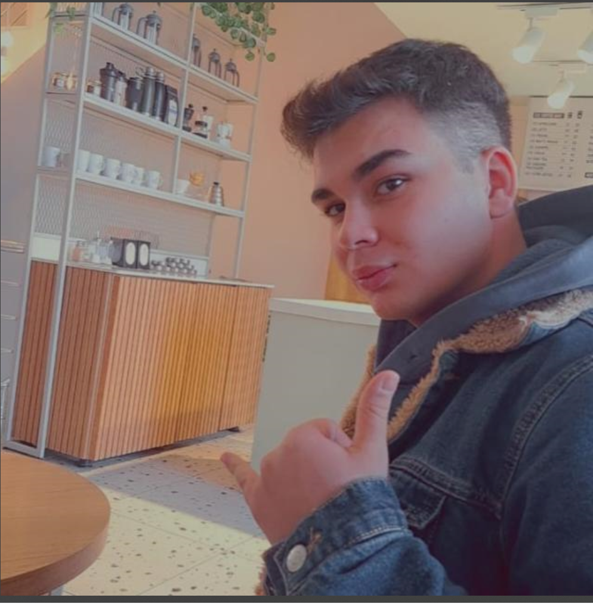

Hakkımda
Merhaba! Benim adım Mehmet. Teknoloji, bilgisayar bilimi ve web geliştirme konusunda tutkuluyum. İşte biraz bana dair bilgiler:
- Yaş: 21
- Konum: Türkiye, Ankara
- Hobiler: Oyun oynamak, güreş ve gezmek
Favori Hobim: Güreş
Güreş, lise yıllarımda benim için hem fiziksel hem de zihinsel bir meydan okuma olarak hayatımda önemli bir yer edindi. Hocamın teşvikiyle okul takımına girmemle başlayan bu serüven, beni birçok müsabakaya götürdü ve heyecan dolu anılarla doldu.
Bilgisayar Özelliklerim
- İşlemci: 4.Nesil Haswell Intel® Core™ i7-4710MQ
- RAM: 8GB DDR3L 1600MHz
- Ekran Kartı: 2GB nVIDIA GeForce GTX950M
- Depolama: 1x mSATA SSD + 1x HDD
CV'm
Kişisel Bilgiler
Adı Soyadı: Mehmet Karisli
Doğum Tarihi: 20.10.2003
Telefon: +90 544 691 9247
Email: musapmemo@gmail.com
Eğitim
Ostim Teknik Universitesi/lojistik
Yetenekler
- HTML, CSS
- Web Geliştirme